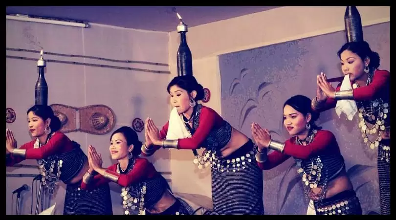

Hojagiri is a folk dance, performed in the state of Tripura, India[1] by Tripuri people of Reang clan.[2] It is performed by women and young girls, about 4 to 6 members in a team, singing, balancing on an earthen pitcher and managing other props such as a bottle on the head and earthen lamp on the hand.[3] while only the lower half of the body is moved.
Some mudras (gestures) of Hojagiri dance
The dance is performed on the occasion of Hojagiri festivals or Laxmi Puja, held in the following full moon night of Durga Puja. generally after 3rd day of Dashera. The Goddess Mailuma, (Laxmi) is worshipped on this day. It's one of the divine Tripuri dance form.
The male members participate in singing the lyrics, playing the Kham and Sumui/Kshumu(wind instrument). The lyrics are very simple. Required for the dance are, a BAILING, a wide circular rice cleaning article made of cane, a pitcher or kola, bodo(bottle), Chati/Kupi (a household traditional lamp), mairang(a plain dish) and a handkerchief for each performer.
One has to undergo an extensive training and rehearsal for slow hip and waist maneuvering. It takes about 30 minutes to finish the sequence. The whole of the Huk or Jhum cultivation is exhibited through this dance. To that extent it is like the Hukni dance but the rhythm and sequence are totally different.
Satya Ram Riang established a school, where he is teaching young people to learn the dance. Sh. Riang was awarded with Sangeet Natak Academy Award and Padmashri Award by Government of India for his relentless effort, to preserve and promote the Hojagiri dance, in India and abroad